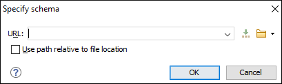

Associating a Schema Directly in JSON Documents
Associate Schema Action
The schema used by the Content Completion Assistant and document validation engine can be associated with the current document by using the Associate Schema action. The association can specify a relative file path or a URL of the schema.
To associate a JSON Schema to the current JSON document, follow these steps:
-
Select the Associate Schema action from the toolbar (or menu).
Step Result: The Associate Schema dialog box is displayed:
Figure 1. Associate Schema Dialog Box This dialog box contains the following options for JSON documents:- URL - Allows you to specify or select a URL for the schema. It also keeps a history of the last used schemas. The URL must point to the schema file that can be loaded from the local disk or from a remote server through HTTP(S), FTP(S) or a custom protocol.
- Use path relative to file location - Select this option if the JSON instance document and the associated schema contain relative paths. The location of the schema file is inserted in the JSON instance document as a relative file path. This practice allows you, for example, to share these documents with other users without running into problems caused by multiple project locations on physical disk.
- Select the JSON Schema that will be associated with the JSON document.
- Click OK.
Result: A $schema property is added at the beginning of the
document with its value set to the specified URL. If the document already contained a schema
association, the old association will be replaced with the new one.
Tip: To quickly open the schema used for validating the current document, select
the Open Associated
Schema action from the toolbar (or
menu).